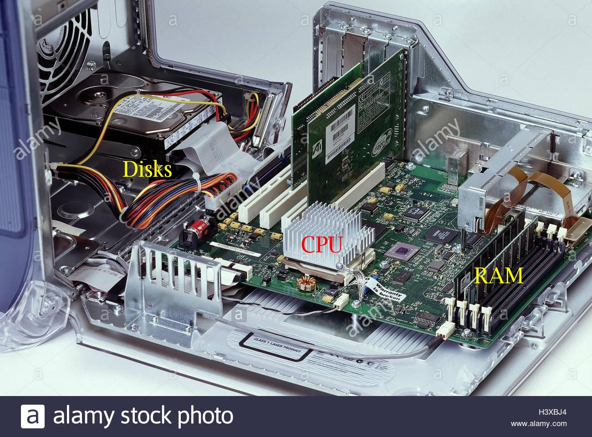
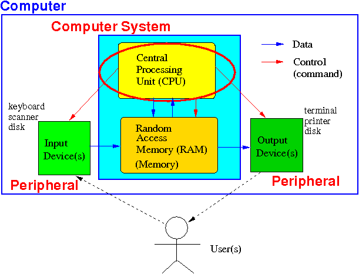
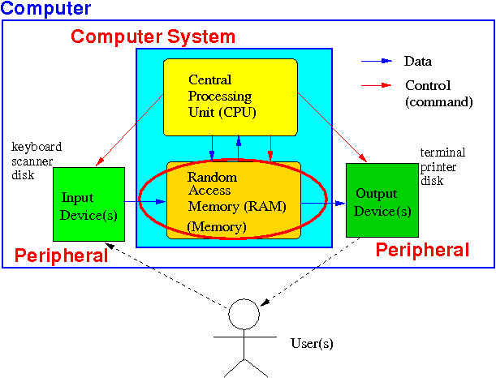
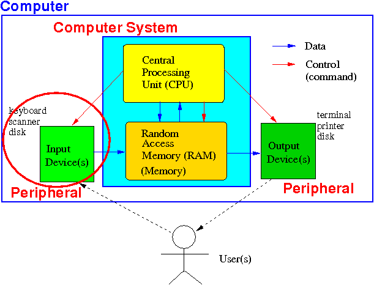
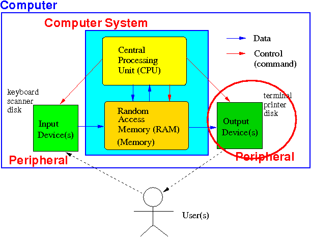

A closer look at the
Computer hardware
(that is used to execute a computer program)
In the previous webpage, we
saw the
internal components of a
computer:

We will now
explore the
different components of a
computer and study their
functionality
Logical (functional) organization of computer hardware
A computer contains
4 types of
components:
- The Central Processing Unit (CPU)
--- also known as a processor.
- Memory
(a.k.a. Random Access Memory (RAM)
- Input devices
(e.g., mouse, key board, scanner, disks...)
- Output devices
(e.g., terminal, printer, disks, ...)
|
Logical (functional) organization of computer hardware
This way of
constructing a
computer is called
the
von Neumann
architecture:
The computer system
consists of:
(see:
click here)
- A (central) processing unit
that contains
an arithmetic logic unit
and registers
- The memory
that stores
data and instructions
|
Categorizing components of computer
further into
core/non-core
components
The components
in a computer can be
further classified
into 2 (broader) categories:
-
Computer system components
(or core components) consisting of:
- The Central Processing Unit (CPU)
--- also known as a processor.
- The Computer memory
(a.k.a. Random Access Memory (RAM)
|
The computer system performs
the main (computational) function
of the computer
-
Peripheral devices
(a.k.a.: I/O devices)
- Input devices
(e.g., mouse, key board, scanner, CD-ROM...)
- Output devices
(e.g., terminal, printer, ...)
- Input/Output devices
(e.g., disk, network card,...)
|
Peripheral devices are
auxiliary devices that
allow users to
enter inputs into the computer
and/or
obtain outputs from the
computer
|
The function
of each type of component in a computer:
(1) the CPU
The Central Processing Unit (CPU):

- The CPU will
fetch the next instructions
in a computer program from
the computer memory and
execute the
(fetched) instruction
|
The function
of each type of component in a computer:
(2) the memory
The
memory (or RAM):

- The memory
is a storage component that
stores:
-
Instructions of
computer programs
-
Variables (= data) used in the
computer programs
|
|
The function
of each type of component in a computer:
(3) the input device(s)
The input devices:

- Input devices
enables human users
to
enter data
into the computer (= machine)
|
Note:
all data are
represented
by binary numbers when it is
inside
the computer !!
The function
of each type of component in a computer:
(4) the output device(s)
The output devices:

- Output devices
enables the computer to
show data stored inside the computer
to a human user
in a "humanly" readable manner
|
Remember:
all data
inside the computer are
represented
in (not-human-friendly) binary !!
The input/output devices
- Input/output devices are
peripheral devices that
can be used both as
input and
output
devices
- The most commonly used used
IO device is a
(hard) disk
|
❮
❯